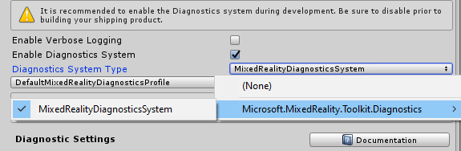

診断システム (Diagnostic System)
Mixed Reality Toolkit 診断システムは、アプリケーションの問題の分析を可能にするツールです。
診断システムの最初のリリースには、アプリケーションの使用中にパフォーマンスの問題を分析するためのビジュアルプロファイラ (Visual Profiler) が含まれています。
はじめに
Important
診断システムは、製品開発サイクル全体を通じて有効にし、最終バージョンをビルドしてリリースする前の最後の変更として無効にすることを 強く お勧めします。
診断を有効にする
診断システムは、MixedRealityToolkit オブジェクト (または別のサービス登録 (service registar)) コンポーネントによって管理されます。
次の手順では、MixedRealityToolkit オブジェクトの使用を想定しています。他のサービスレジストラに必要な手順は異なる場合があります。
- シーンヒエラルキーで MixedRealityToolkit オブジェクトを選択します。

- インスペクターで「Diagnostics System」セクションに移動し、「Enable」にチェックを入れます。

- 診断システムの実行を選択する

Note
デフォルトのプロファイル (DefaultMixedRealityToolkitConfigurationProfiel) を使うユーザーは、事前に設定された診断システム MixedRealityDiagnosticsSystem オブジェクトを使用します。
診断のオプションを設定する
診断システムは、設定プロファイルを使用して、表示するコンポーネントを指定し、それらの設定を行います。使用可能なコンポーネント設定の詳細については、診断システムの設定を参照してください。

ビルドとデプロイ
診断システムが望ましいオプションで設定されていれば、プロジェクトをターゲットプラットフォームにビルド、デプロイできます。
Note
アプリケーションを開発する際、ビルドとデプロイの手順が必要ない Unity の Play モードを利用することも可能ですが、ターゲットハードウェアとプラットフォーム上で実行されているコンパイル済みアプリケーションを使用して診断システムの結果を評価することが重要です。 ビジュアルプロファイラ (Visual Profiler) などのパフォーマンス診断では、エディター内から実行されたときに実際のアプリケーション のパフォーマンスが正確に反映されない場合があります。